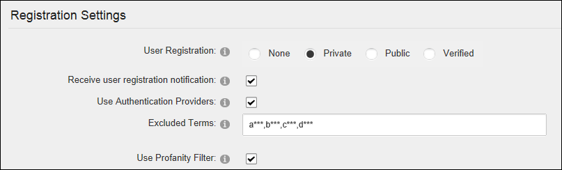
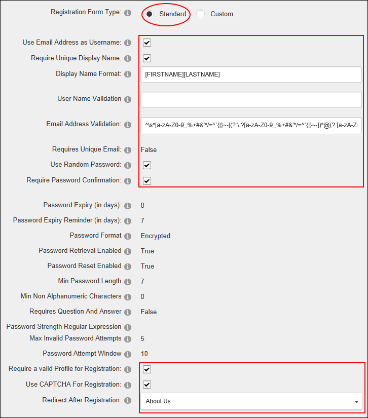

Configuring the Standard Registration Form
How to set the user registration options for this site. Settings include choosing the page users are redirected to after registration, optionally enabling the CAPTCHA security code feature and adding validation requirements.
- Navigate to Admin >
 Site Settings.
Site Settings.
- Select the User Account Settings tab.
- Expand the Registration Settings section and then modify one or more settings.
- At User Registration, select either Private, Public or Verified user registration. See "Enabling User Registration" and See "Disabling User Registration" for more information.
- Optional. At Receive User Registration Notification, to send a notification email to the user when they register. Note: A registration email will always be sent if the User Registration field above is set to Private because the Administrator will need to receive the notification to approve the user account.
- Optional. At Use Authentication Providers, to use Authentication providers during registration. Note: This setting may not be supported by all providers.
- Optional. In the Excluded Terms text box, enter a comma-delimited list of terms that users will be prevented from using in their Username or Display Name. This is useful to prevent profanities or other unwanted words. Any excluded terms added here are in addition to
those included with any profanity filters set.
- Optional. At Use Profanity Filter, to enforce the profanity filter for both the Username and Display Name fields during registration.

- At Registration Form Type, select the Standard registration form.
- Optional. At Use Email Address as Username, to use the email address as a user name. This will remove the user name field from the registration form.
- At Require Unique Display Name, to set display names as unique. If a user chooses a name that exists already this will suggest a modified name based on the user's first name and last name - OR - .if more than one user can have the same display name. This option is unchecked by default.
- In the Display Name Format text box, enter tokens to set the format of the users display name. Setting this option will prevent users from editing their display name. You can optionally specify a format for the users display name. The format can include tokens for dynamic substitution such as [FIRSTNAME] [LASTNAME] and [USERNAME]. If a display name format is specified, the display name will no longer be editable through the user interface.
- In the User Name Validation text box, modify the user name validation expression if required.
E.g. [a-zA-Z0-9_]*$
- In the Email Address Validation text box, modify the provided email validation expression.
- Optional. At Use Random Password, to generate random passwords during registration, rather than displaying a password entry field.
- Optional. At Require Password Confirmation, to require the registration form to display a password confirmation box.
- Optional. In the Password Expiry (in days) text box, enter the number of days until a user's password expires. Users will be prompted to change their password the next time they login. Enter 0 if the password never expires. Note: This field is only enforced if the user is using the regular DNN Authentication method. (I.e. They enter their User Name and Password when logging in). If the user logs in using alternate authentication methods such as Facebook, Live, Yahoo or Google, this setting will be ignored.
- In the Password Expiry Reminder (in days) text box, enter the number of days warning given to a user notifying them that their password is about to expire and they are required to change it.
- The following nine (9) read only settings are managed using the Configuration Manager. See "Viewing Pre-Configured Registration Settings"
- At Require a Valid Profile for Registration, to require users to enter a valid profile during registration. Valid Profiles require the User Name, First Name, Last Names, Display Name, Email Address and Password fields to all be completed. In addition, any other fields that have been set as required in the Profile Setting section are required when registering on the site. See "Managing a Profile Field" - OR - .to disable. This is the default setting.
- At Use CAPTCHA For Registration, to use the CAPTCHA
security code box during registration - OR - .to remove CAPTCHA. - At Redirect After Registration, select the name of the page that users are redirected to after registering on the site - OR - Select < None Specified > to disable redirection.
-
Click the Update button.
